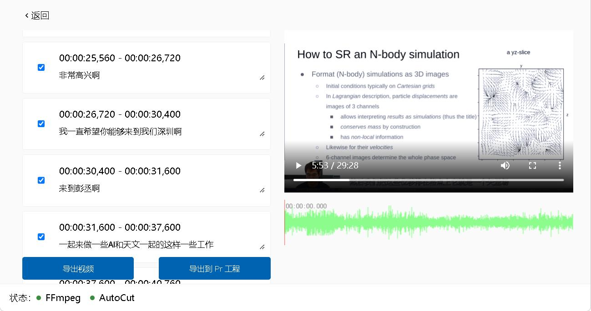
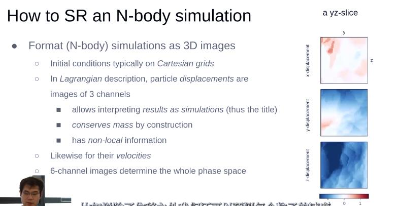
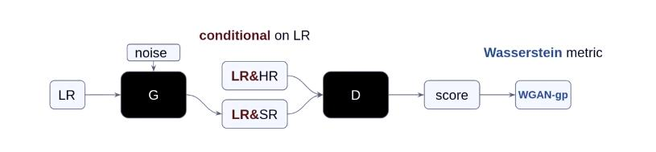
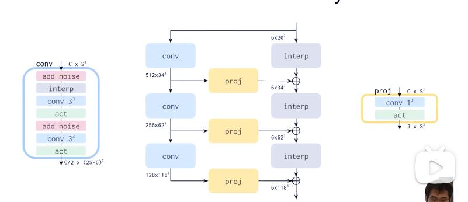
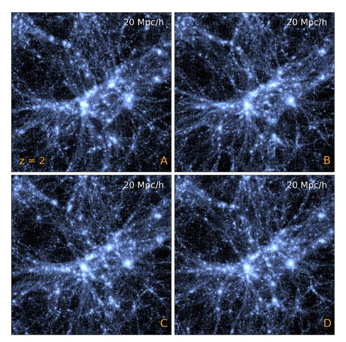
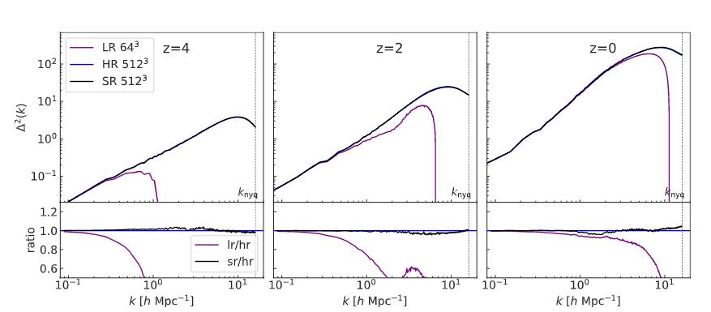
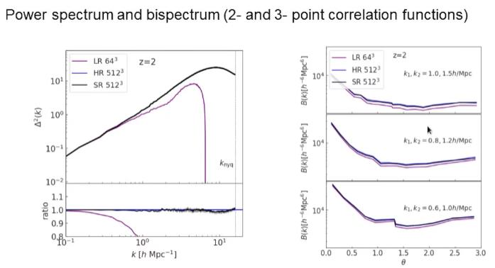

<!DOCTYPE html>


  <html lang="en">
    

    <head>
      <meta charset="utf-8" />
        
      <meta
        name="viewport"
        content="width=device-width, initial-scale=1, maximum-scale=1"
      />
      <title>人工智能辅助的超分辨率宇宙学模拟 |  小熊的小站</title>
  <meta name="generator" content="hexo-theme-ayer">
      
      <link rel="shortcut icon" href="/favicon.ico" />
       
<link rel="stylesheet" href="/dist/main.css">

      
<link rel="stylesheet" href="/css/fonts/remixicon.css">

      
<link rel="stylesheet" href="/css/custom.css">
 
      <script src="https://cdn.staticfile.org/pace/1.2.4/pace.min.js"></script>
       

<script type="text/javascript">
(function(i,s,o,g,r,a,m){i['GoogleAnalyticsObject']=r;i[r]=i[r]||function(){
(i[r].q=i[r].q||[]).push(arguments)},i[r].l=1*new Date();a=s.createElement(o),
m=s.getElementsByTagName(o)[0];a.async=1;a.src=g;m.parentNode.insertBefore(a,m)
})(window,document,'script','//www.google-analytics.com/analytics.js','ga');

ga('create', 'UA-228563528-1', 'auto');
ga('send', 'pageview');

</script>


 
<script>
var _hmt = _hmt || [];
(function() {
	var hm = document.createElement("script");
	hm.src = "https://hm.baidu.com/hm.js?71ee62302f36ca8f840077a641705255";
	var s = document.getElementsByTagName("script")[0]; 
	s.parentNode.insertBefore(hm, s);
})();
</script>


      <link
        rel="stylesheet"
        href="https://cdn.jsdelivr.net/npm/@sweetalert2/theme-bulma@5.0.1/bulma.min.css"
      />
      <script src="https://cdn.jsdelivr.net/npm/sweetalert2@11.0.19/dist/sweetalert2.min.js"></script>

      <!-- mermaid -->
      
      <style>
        .swal2-styled.swal2-confirm {
          font-size: 1.6rem;
        }
      </style>
    </head>
  </html>
</html>


<body>
  <div id="app">
    
      
    <main class="content on">
      <section class="outer">
  <article
  id="post-20221128"
  class="article article-type-post"
  itemscope
  itemprop="blogPost"
  data-scroll-reveal
>
  <div class="article-inner">
    
    <header class="article-header">
       
<h1 class="article-title sea-center" style="border-left:0" itemprop="name">
  人工智能辅助的超分辨率宇宙学模拟
</h1>
 

      
    </header>
     
    <div class="article-meta">
      <a href="/2022/20221128/" class="article-date">
  <time datetime="2022-11-28T02:15:19.000Z" itemprop="datePublished">2022-11-28</time>
</a>   
<div class="word_count">
    <span class="post-time">
        <span class="post-meta-item-icon">
            <i class="ri-quill-pen-line"></i>
            <span class="post-meta-item-text"> Word count:</span>
            <span class="post-count">1.8k</span>
        </span>
    </span>

    <span class="post-time">
        &nbsp; | &nbsp;
        <span class="post-meta-item-icon">
            <i class="ri-book-open-line"></i>
            <span class="post-meta-item-text"> Reading time≈</span>
            <span class="post-count">6 min</span>
        </span>
    </span>
</div>
 
    </div>
      
    <div class="tocbot"></div>


  
    <div class="article-entry" itemprop="articleBody">
       
  <link rel="stylesheet" type="text&#x2F;css" href="https://cdn.jsdelivr.net/npm/hexo-tag-hint@0.3.1/dist/hexo-tag-hint.min.css"><h2 id="摘要"><a href="#摘要" class="headerlink" title="摘要"></a>摘要</h2><p>传统“星系形成”的宇宙学模拟受到了有限计算资源的限制，而这篇论文试图借助深度学习来解决这个问题。具体来说，通过生成 512 倍数以上的粒子并预测它们从初始位置的位移来提高模拟的分辨率。该方法的结果可以被视为是模拟实现的本身，而不是对其密度场的投影。由于生成过程是随机的，使得我们能够对大尺度环境下的小尺度模式进行采样。值得一提的是，该模型仅从16 对低分辨率 - 高分辨率的模拟中学习，就能够生成超分辨率的模拟。将模型进一步部署在比训练模拟框大 1000 倍的模拟中，该实验同样表明该模型可以快速生成高分辨率的模拟。由此，我们可以得出结论，人工智能辅助有可能彻底改变大型宇宙学体积中小规模星系形成物理学的建模。</p>
<p>参考：</p>
<p>论文：《AI-assisted superresolution cosmological simulations》</p>
<p>视频：<a target="_blank" rel="noopener" href="https://www.bilibili.com/video/BV1bg411i7Nv/">【沈向洋带你读论文】人工智能辅助的超分辨率宇宙学模拟【StyleGAN2】【天文宇宙学】【超分辨率】</a></p>
<span id="more"></span>

<h2 id="AI-天文在研究什么"><a href="#AI-天文在研究什么" class="headerlink" title="AI 天文在研究什么"></a>AI 天文在研究什么</h2><p>有大量的天文观测数据，成指数增长，他也有自己的摩尔定律，已经增长到必须使用深度学习方法来处理的程度了。</p>
<p>从分论上来看，大概有：</p>
<p>（1）天文学图像</p>
<p>（2）光变曲线，就是光强随时间变化的这么一个函数。</p>
<p>可以用时间序列分析的各种，比如说 Neural ODE 和 Neural SDE 的方法来解决</p>
<p>（3）天文学光谱，光强随波长这么一个分布</p>
<p>可以用PCA 或者是非负矩阵分解，然后再用神经网络的方法来处理。</p>
<p>这些海量的数据使 AI for Astronomy 变得非常的 promising。有可能在将来从这些数据中发现现在未知的一些物理规律以及天文现象。</p>
<h2 id="论文中的方法"><a href="#论文中的方法" class="headerlink" title="论文中的方法"></a>论文中的方法</h2><p>利用超分辨率的方法来超分辨率化数字模拟。</p>
<h3 id="需要考虑的几个点："><a href="#需要考虑的几个点：" class="headerlink" title="需要考虑的几个点："></a>需要考虑的几个点：</h3><h4 id="（1）建模"><a href="#（1）建模" class="headerlink" title="（1）建模"></a><strong>（1）建模</strong></h4><p>由于我们宇宙一开始是非常均匀的，所以我们可以设置初始条件，把它放在一个格点上。然后从这个每个格点出发，指向他们现在所在的位置，然后把这些位移排在格点上,它就是一个矢量场。</p>
<p></p>
<p>如果我们分开来看，每一个分量的话，就可以把它们分别列为，三维图像的三个channel，就像RGB一样。然后这样做有一个好处就是，它对于每个粒子这样做之后，我们确保了宇宙中的物质的质量是守恒的，因为我们的粒子不会变多，也不会变少。</p>
<p></p>
<p>其次我们对于结果，可以同样把它处理为一个simulation的结果，就是说它与正常的 simulation 的结果看上去没有任何的不同。在此基础上，我们还可以加入速度的信息，比如说除了位移之外，我们还可以预测每个粒子的速度，从而得到整个相空间的物质通道信息。</p>
<h4 id="（2）对称性原理"><a href="#（2）对称性原理" class="headerlink" title="（2）对称性原理"></a>（2）对称性原理</h4><p>另外，宇宙在大尺度上是平移不变和旋转不变的，也就是对称性原理。</p>
<p>基于可以对立方体和正八面体可以做48种操作而不改变它本身的特性，在数据增强模块上，对input /output data 同时做48种操作之一。</p>
<p>其次还有这种平移不变性，这种传统的 CNN 其实已经本身是平移不变的，但是传统的 padding 的办法，比如说 zero padding 会破坏这种平移不变性。为了保护这种平移不变性引入这种周期性的 padding 的办法。</p>
<h4 id="（3）一对多映射"><a href="#（3）一对多映射" class="headerlink" title="（3）一对多映射"></a>（3）一对多映射</h4><p>超分辨率是一个映射，而我们需要的映射不是个一对一的映射，需要它是一个一对多的映射。因为我们的高分辨率模拟中它的初始条件包含了低分辨率模拟中不存在的一些信息。这些高频的信息其实是随机的，而它有无穷多种可能性，所以这种映射其实是从一到无穷多的一个映射。</p>
<h3 id="网络结构"><a href="#网络结构" class="headerlink" title="网络结构"></a>网络结构</h3><p></p>
<p>具体模型结合了stylegan2的架构。</p>
<p></p>
<p>StyleGAN2本身是用来做图像合成的,不是用来做超分辨率的，作者利用其中的一部分，然后把低分辨率输入作为 StyleGaN2 Generator 的输入，经过层层的上采样，然后就形成了超分辨率的这么一个结果，其中最重要的就是左边这个要不停的加入 noise，来形成更精细的结构。而 discriminator 的架构就是比较经典的ResNet。</p>
<p>训练数据采用了 16 对小体积的数值模拟，其中我们的低分辨率和高分辨率模拟之间，它的分辨率差了 512 倍。</p>
<h3 id="实验效果"><a href="#实验效果" class="headerlink" title="实验效果"></a>实验效果</h3><h4 id="一些专有定义"><a href="#一些专有定义" class="headerlink" title="一些专有定义"></a>一些专有定义</h4><p>展现实验结果前先介绍文中经常出现的z的定义。</p>
<p>李寅老师的回答：z通常表示红移（redshift），过去天体所发射光子的波长随着宇宙的膨胀而变长，因在可见光波段表现为变红而被称为红移。因此红移越大表明当时的宇宙越小，在越久远的过去。宇宙的大小相对今天大小的比率称为scale factor，用符号a表示，也就是a = 宇宙某时刻大小 / 宇宙现在的大小。a与z的关系是a = 1 / (1+z)，也就是z=2时的宇宙是今天的1/3大小。</p>
<h4 id="猜猜猜"><a href="#猜猜猜" class="headerlink" title="猜猜猜"></a>猜猜猜</h4><p>下图中有三张图片是生成的，只有一张是真的，猜猜哪个是真的？</p>
<p></p>
<p>（答案是A）</p>
<h4 id="功率谱比较"><a href="#功率谱比较" class="headerlink" title="功率谱比较"></a>功率谱比较</h4><p></p>
<p></p>
<p>功率谱其实是傅里叶空间的两点关联函数，它刻画了不同尺度上物质的密度分布的一个涨落大小。我们可以看到在小尺度上面,超分别率和高分别率混合得非常好。</p>
<h4 id="有趣的发现"><a href="#有趣的发现" class="headerlink" title="有趣的发现"></a>有趣的发现</h4><p>将超分别率模型应用到更大的体积中，体积是训练模拟体积的1000倍，结果出现了训练数据中不存在的暗物质晕。</p>
<h2 id="宇宙线模拟综述推荐"><a href="#宇宙线模拟综述推荐" class="headerlink" title="宇宙线模拟综述推荐"></a>宇宙线模拟综述推荐</h2><p><a target="_blank" rel="noopener" href="https://readpaper.com/paper/4568278127084576769?channel=harryreadpaper">Large-scale dark matter simulations</a></p>
<h2 id="未来方向"><a href="#未来方向" class="headerlink" title="未来方向"></a>未来方向</h2><p>未来方向有：<br>a) 尝试新的生成模型如diffusion models；<br>b) 更小尺度的超分辨率，需要考虑星系尺度的物理过程；<br>c) 时间上的连续性问题；<br>d) 取长补短地与数值模拟模拟（例如作者刚刚开源的<a target="_blank" rel="noopener" href="https://github.com/eelregit/pmwd">基于JAX的可微模拟pmwd</a>）结合，让快速有效的数值算法来处理长程的引力相互作用，用神经网络来补充短程相互作用。混合模型使用伴随法（adjoint method）训练，以探索星系形成过程的隐变量空间（latent space）。</p>
 
      <!-- reward -->
      
    </div>
    

    <!-- copyright -->
    
    <footer class="article-footer">
       
<div class="share-btn">
      <span class="share-sns share-outer">
        <i class="ri-share-forward-line"></i>
        分享
      </span>
      <div class="share-wrap">
        <i class="arrow"></i>
        <div class="share-icons">
          
          <a class="weibo share-sns" href="javascript:;" data-type="weibo">
            <i class="ri-weibo-fill"></i>
          </a>
          <a class="weixin share-sns wxFab" href="javascript:;" data-type="weixin">
            <i class="ri-wechat-fill"></i>
          </a>
          <a class="qq share-sns" href="javascript:;" data-type="qq">
            <i class="ri-qq-fill"></i>
          </a>
          <a class="douban share-sns" href="javascript:;" data-type="douban">
            <i class="ri-douban-line"></i>
          </a>
          <!-- <a class="qzone share-sns" href="javascript:;" data-type="qzone">
            <i class="icon icon-qzone"></i>
          </a> -->
          
          <a class="facebook share-sns" href="javascript:;" data-type="facebook">
            <i class="ri-facebook-circle-fill"></i>
          </a>
          <a class="twitter share-sns" href="javascript:;" data-type="twitter">
            <i class="ri-twitter-fill"></i>
          </a>
          <a class="google share-sns" href="javascript:;" data-type="google">
            <i class="ri-google-fill"></i>
          </a>
        </div>
      </div>
</div>

<div class="wx-share-modal">
    <a class="modal-close" href="javascript:;"><i class="ri-close-circle-line"></i></a>
    <p>扫一扫，分享到微信</p>
    <div class="wx-qrcode">
      
    </div>
</div>

<div id="share-mask"></div>  
  <ul class="article-tag-list" itemprop="keywords"><li class="article-tag-list-item"><a class="article-tag-list-link" href="/tags/%E4%BA%BA%E5%B7%A5%E6%99%BA%E8%83%BD/" rel="tag">人工智能</a></li><li class="article-tag-list-item"><a class="article-tag-list-link" href="/tags/%E5%A4%A9%E6%96%87/" rel="tag">天文</a></li><li class="article-tag-list-item"><a class="article-tag-list-link" href="/tags/%E6%9C%BA%E5%99%A8%E5%AD%A6%E4%B9%A0/" rel="tag">机器学习</a></li></ul>

    </footer>
  </div>

   
  <nav class="article-nav">
    
      <a href="/2023/20230101/" class="article-nav-link">
        <strong class="article-nav-caption">上一篇</strong>
        <div class="article-nav-title">
          
            计算神经科学能否成为未来人工智能的发展方向？
          
        </div>
      </a>
    
    
      <a href="/2022/20221126/" class="article-nav-link">
        <strong class="article-nav-caption">下一篇</strong>
        <div class="article-nav-title">Chain of Thought</div>
      </a>
    
  </nav>

   
 
   
     
</article>

</section>
      <footer class="footer">
  <div class="outer">
    <ul>
      <li>
        Copyrights &copy;
        2019-2024
        <i class="ri-heart-fill heart_icon"></i> LJX
      </li>
    </ul>
    <ul>
      <li>
        
        
        
        Powered by <a href="https://hexo.io" target="_blank">Hexo</a>
        <span class="division">|</span>
        Theme - <a href="https://github.com/Shen-Yu/hexo-theme-ayer" target="_blank">Ayer</a>
        
      </li>
    </ul>
    <ul>
      <li>
        
        
        <span>
  <span><i class="ri-user-3-fill"></i>Visitors:<span id="busuanzi_value_site_uv"></span></span>
  <span class="division">|</span>
  <span><i class="ri-eye-fill"></i>Views:<span id="busuanzi_value_page_pv"></span></span>
</span>
        
      </li>
    </ul>
    <ul>
      
    </ul>
    <ul>
      
    </ul>
    <ul>
      <li>
        <!-- cnzz统计 -->
        
        <script type="text/javascript" src='https://s9.cnzz.com/z_stat.php?id=1278069914&amp;web_id=1278069914'></script>
        
      </li>
    </ul>
  </div>
</footer>    
    </main>
    <div class="float_btns">
      <div class="totop" id="totop">
  <i class="ri-arrow-up-line"></i>
</div>

<div class="todark" id="todark">
  <i class="ri-moon-line"></i>
</div>

    </div>
    <aside class="sidebar on">
      <button class="navbar-toggle"></button>
<nav class="navbar">
  
  <div class="logo">
    <a href="/"></a>
  </div>
  
  <ul class="nav nav-main">
    
    <li class="nav-item">
      <a class="nav-item-link" href="/">主页</a>
    </li>
    
    <li class="nav-item">
      <a class="nav-item-link" href="/archives">目录</a>
    </li>
    
    <li class="nav-item">
      <a class="nav-item-link" href="/about">关于本站</a>
    </li>
    
    <li class="nav-item">
      <a class="nav-item-link" href="/about_me">关于我</a>
    </li>
    
    <li class="nav-item">
      <a class="nav-item-link" href="/photos">人间烟火</a>
    </li>
    
    <li class="nav-item">
      <a class="nav-item-link" target="_blank" rel="noopener" href="https://act18l.github.io/">欧拉计划</a>
    </li>
    
  </ul>
</nav>
<nav class="navbar navbar-bottom">
  <ul class="nav">
    <li class="nav-item">
      
      <a class="nav-item-link nav-item-search"  title="Search">
        <i class="ri-search-line"></i>
      </a>
      
      
    </li>
  </ul>
</nav>
<div class="search-form-wrap">
  <div class="local-search local-search-plugin">
  <input type="search" id="local-search-input" class="local-search-input" placeholder="Search...">
  <div id="local-search-result" class="local-search-result"></div>
</div>
</div>
    </aside>
    <div id="mask"></div>

<!-- #reward -->
<div id="reward">
  <span class="close"><i class="ri-close-line"></i></span>
  <p class="reward-p"><i class="ri-cup-line"></i>请我喝杯咖啡吧~</p>
  <div class="reward-box">
    
    <div class="reward-item">
      
      <span class="reward-type">支付宝</span>
    </div>
    
    
    <div class="reward-item">
      
      <span class="reward-type">微信</span>
    </div>
    
  </div>
</div>
    
<script src="/js/jquery-3.6.0.min.js"></script>
 
<script src="/js/lazyload.min.js"></script>

<!-- Tocbot -->
 
<script src="/js/tocbot.min.js"></script>

<script>
  tocbot.init({
    tocSelector: ".tocbot",
    contentSelector: ".article-entry",
    headingSelector: "h1, h2, h3, h4, h5, h6",
    hasInnerContainers: true,
    scrollSmooth: true,
    scrollContainer: "main",
    positionFixedSelector: ".tocbot",
    positionFixedClass: "is-position-fixed",
    fixedSidebarOffset: "auto",
  });
</script>

<script src="https://cdn.staticfile.org/jquery-modal/0.9.2/jquery.modal.min.js"></script>
<link
  rel="stylesheet"
  href="https://cdn.staticfile.org/jquery-modal/0.9.2/jquery.modal.min.css"
/>
<script src="https://cdn.staticfile.org/justifiedGallery/3.8.1/js/jquery.justifiedGallery.min.js"></script>

<script src="/dist/main.js"></script>

<!-- ImageViewer -->
 <!-- Root element of PhotoSwipe. Must have class pswp. -->
<div class="pswp" tabindex="-1" role="dialog" aria-hidden="true">

    <!-- Background of PhotoSwipe. 
         It's a separate element as animating opacity is faster than rgba(). -->
    <div class="pswp__bg"></div>

    <!-- Slides wrapper with overflow:hidden. -->
    <div class="pswp__scroll-wrap">

        <!-- Container that holds slides. 
            PhotoSwipe keeps only 3 of them in the DOM to save memory.
            Don't modify these 3 pswp__item elements, data is added later on. -->
        <div class="pswp__container">
            <div class="pswp__item"></div>
            <div class="pswp__item"></div>
            <div class="pswp__item"></div>
        </div>

        <!-- Default (PhotoSwipeUI_Default) interface on top of sliding area. Can be changed. -->
        <div class="pswp__ui pswp__ui--hidden">

            <div class="pswp__top-bar">

                <!--  Controls are self-explanatory. Order can be changed. -->

                <div class="pswp__counter"></div>

                <button class="pswp__button pswp__button--close" title="Close (Esc)"></button>

                <button class="pswp__button pswp__button--share" style="display:none" title="Share"></button>

                <button class="pswp__button pswp__button--fs" title="Toggle fullscreen"></button>

                <button class="pswp__button pswp__button--zoom" title="Zoom in/out"></button>

                <!-- Preloader demo http://codepen.io/dimsemenov/pen/yyBWoR -->
                <!-- element will get class pswp__preloader--active when preloader is running -->
                <div class="pswp__preloader">
                    <div class="pswp__preloader__icn">
                        <div class="pswp__preloader__cut">
                            <div class="pswp__preloader__donut"></div>
                        </div>
                    </div>
                </div>
            </div>

            <div class="pswp__share-modal pswp__share-modal--hidden pswp__single-tap">
                <div class="pswp__share-tooltip"></div>
            </div>

            <button class="pswp__button pswp__button--arrow--left" title="Previous (arrow left)">
            </button>

            <button class="pswp__button pswp__button--arrow--right" title="Next (arrow right)">
            </button>

            <div class="pswp__caption">
                <div class="pswp__caption__center"></div>
            </div>

        </div>

    </div>

</div>

<link rel="stylesheet" href="https://cdn.staticfile.org/photoswipe/4.1.3/photoswipe.min.css">
<link rel="stylesheet" href="https://cdn.staticfile.org/photoswipe/4.1.3/default-skin/default-skin.min.css">
<script src="https://cdn.staticfile.org/photoswipe/4.1.3/photoswipe.min.js"></script>
<script src="https://cdn.staticfile.org/photoswipe/4.1.3/photoswipe-ui-default.min.js"></script>

<script>
    function viewer_init() {
        let pswpElement = document.querySelectorAll('.pswp')[0];
        let $imgArr = document.querySelectorAll(('.article-entry img:not(.reward-img)'))

        $imgArr.forEach(($em, i) => {
            $em.onclick = () => {
                // slider展开状态
                // todo: 这样不好，后面改成状态
                if (document.querySelector('.left-col.show')) return
                let items = []
                $imgArr.forEach(($em2, i2) => {
                    let img = $em2.getAttribute('data-idx', i2)
                    let src = $em2.getAttribute('data-target') || $em2.getAttribute('src')
                    let title = $em2.getAttribute('alt')
                    // 获得原图尺寸
                    const image = new Image()
                    image.src = src
                    items.push({
                        src: src,
                        w: image.width || $em2.width,
                        h: image.height || $em2.height,
                        title: title
                    })
                })
                var gallery = new PhotoSwipe(pswpElement, PhotoSwipeUI_Default, items, {
                    index: parseInt(i)
                });
                gallery.init()
            }
        })
    }
    viewer_init()
</script> 
<!-- MathJax -->
 <script type="text/x-mathjax-config">
  MathJax.Hub.Config({
      tex2jax: {
          inlineMath: [ ['$','$'], ["\\(","\\)"]  ],
          processEscapes: true,
          skipTags: ['script', 'noscript', 'style', 'textarea', 'pre', 'code']
      }
  });

  MathJax.Hub.Queue(function() {
      var all = MathJax.Hub.getAllJax(), i;
      for(i=0; i < all.length; i += 1) {
          all[i].SourceElement().parentNode.className += ' has-jax';
      }
  });
</script>

<script src="https://cdn.staticfile.org/mathjax/2.7.7/MathJax.js"></script>
<script src="https://cdn.staticfile.org/mathjax/2.7.7/config/TeX-AMS-MML_HTMLorMML-full.js"></script>
<script>
  var ayerConfig = {
    mathjax: true,
  };
</script>

<!-- Katex -->
 
    
        <link rel="stylesheet" href="https://cdn.staticfile.org/KaTeX/0.15.1/katex.min.css">
        <script src="https://cdn.staticfile.org/KaTeX/0.15.1/katex.min.js"></script>
        <script src="https://cdn.staticfile.org/KaTeX/0.15.1/contrib/auto-render.min.js"></script>
        
    
 
<!-- busuanzi  -->
 
<script src="/js/busuanzi-2.3.pure.min.js"></script>
 
<!-- ClickLove -->

<!-- ClickBoom1 -->

<!-- ClickBoom2 -->

<!-- CodeCopy -->
 
<link rel="stylesheet" href="/css/clipboard.css">
 <script src="https://cdn.staticfile.org/clipboard.js/2.0.10/clipboard.min.js"></script>
<script>
  function wait(callback, seconds) {
    var timelag = null;
    timelag = window.setTimeout(callback, seconds);
  }
  !function (e, t, a) {
    var initCopyCode = function(){
      var copyHtml = '';
      copyHtml += '<button class="btn-copy" data-clipboard-snippet="">';
      copyHtml += '<i class="ri-file-copy-2-line"></i><span>COPY</span>';
      copyHtml += '</button>';
      $(".highlight .code pre").before(copyHtml);
      $(".article pre code").before(copyHtml);
      var clipboard = new ClipboardJS('.btn-copy', {
        target: function(trigger) {
          return trigger.nextElementSibling;
        }
      });
      clipboard.on('success', function(e) {
        let $btn = $(e.trigger);
        $btn.addClass('copied');
        let $icon = $($btn.find('i'));
        $icon.removeClass('ri-file-copy-2-line');
        $icon.addClass('ri-checkbox-circle-line');
        let $span = $($btn.find('span'));
        $span[0].innerText = 'COPIED';
        
        wait(function () { // 等待两秒钟后恢复
          $icon.removeClass('ri-checkbox-circle-line');
          $icon.addClass('ri-file-copy-2-line');
          $span[0].innerText = 'COPY';
        }, 2000);
      });
      clipboard.on('error', function(e) {
        e.clearSelection();
        let $btn = $(e.trigger);
        $btn.addClass('copy-failed');
        let $icon = $($btn.find('i'));
        $icon.removeClass('ri-file-copy-2-line');
        $icon.addClass('ri-time-line');
        let $span = $($btn.find('span'));
        $span[0].innerText = 'COPY FAILED';
        
        wait(function () { // 等待两秒钟后恢复
          $icon.removeClass('ri-time-line');
          $icon.addClass('ri-file-copy-2-line');
          $span[0].innerText = 'COPY';
        }, 2000);
      });
    }
    initCopyCode();
  }(window, document);
</script>
 
<!-- CanvasBackground -->
 
<script src="/js/dz.js"></script>
 
<script>
  if (window.mermaid) {
    mermaid.initialize({ theme: "forest" });
  }
</script>


    
    

  </div>
</body>

</html>